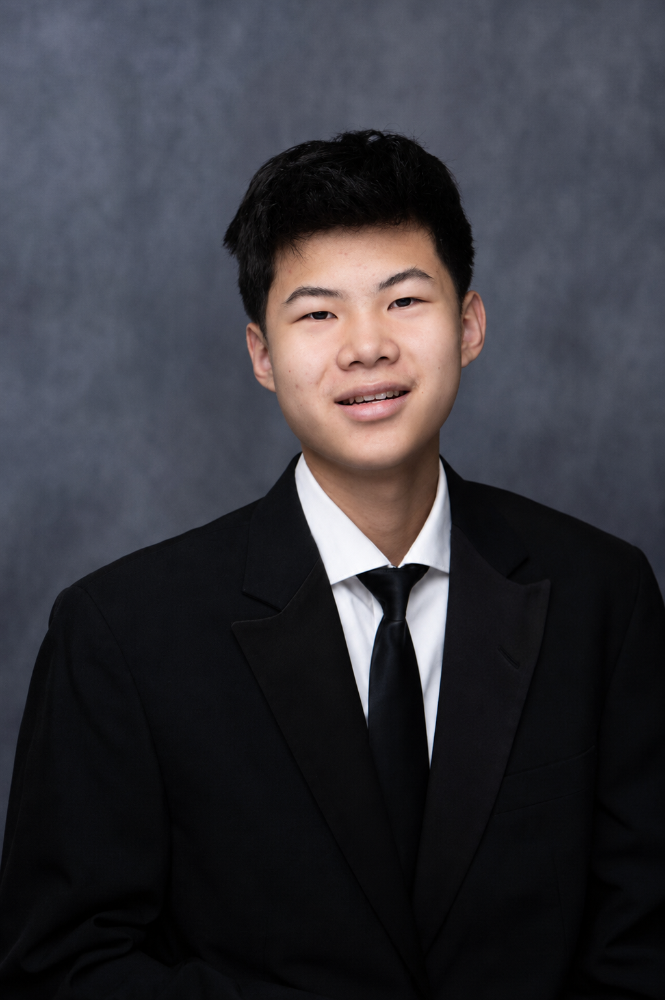

Community priorities
The community identifies what they need, and we build the project around those priorities.
About us
Bringing together student volunteers to support Native communities through projects based on community needs.
Our story
Indigenous Future Coalition is a student-led organization based in the Bay Area that works with Native communities through education, STEM, engineering, technology, and community-led projects.
We work directly with tribes, tribal education departments, and Native organizations to understand where student support could be useful. Each community can decide what type of support would be most helpful, and we will build the project around that.
Starting a project
The community identifies what they need, and we build the project around those priorities.
We work together to decide what the project should look like and what support would be most useful.
Our volunteers contribute their skills through tutoring, STEM, engineering, and other areas.
Our team

Co-Founder
Lucas helps lead Indigenous Future Coalition by building partnerships, organizing student volunteers, and developing projects that connect students with opportunities to support Native communities. He focuses on expanding educational programs through tutoring, STEM, engineering, and technology while helping create projects shaped around community needs. As a co-founder, Lucas works to bring together students and community partners to create meaningful opportunities for learning and support.

Co-Founder
Aiden is committed to expanding educational opportunity while helping Native communities preserve the stories, knowledge, and experiences they want carried forward. As a co-founder of Indigenous Future Coalition, he helps develop STEM mentorship and educational services shaped around community identified needs. He also helps lead the Coalition’s Legacy Project, working with elders, families, and community members to preserve their memories through interviews, oral histories, photographs, and personalized legacy books. Drawing on his experience building student-led educational programs and organizing volunteers, Aiden believes lasting impact begins with listening, trust, and giving communities greater resources to shape their own futures.

Co-President
Solomon helps lead Indigenous Future Coalition by supporting project planning, volunteer coordination, and the development of educational programs. He works with the team to organize tutoring, STEM, engineering, and technology projects while helping create opportunities for students to contribute their skills. As a co-founder, Solomon helps strengthen the Coalition’s programs and partnerships while supporting projects based on the needs of the communities we work with.

Co-President
Jonathan helps lead Indigenous Future Coalition by supporting project planning, volunteer coordination, and the development of educational programs. He works with the team to organize tutoring, STEM, engineering, and technology projects while helping create opportunities for students to contribute their skills. As a co-founder, Jonathan helps strengthen the Coalition’s programs and partnerships while supporting projects based on the needs of the communities we work with.